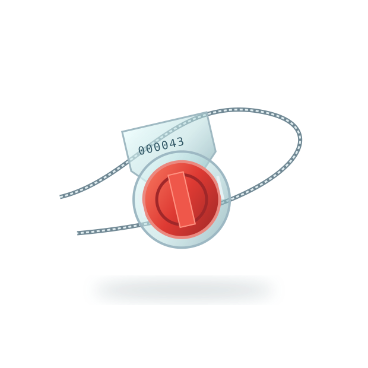

SECURITY SEAL APPLICATION NOTES
Numbering, Logos and Barcodes: Marking Options Explained
Marking helps your team connect a physical seal to the records used in daily operations.

Serial identification
A visible identifier can be recorded at application and compared at handover. Confirm the numbering format and whether it suits your record system.
Logos and text
Tell the supplier what identification you would like printed or marked. Available space and marking options depend on the model; request confirmation rather than assuming every product offers the same choices.
Barcode requirements
If you need a barcode, explain the intended scanning workflow and format. Confirm availability and suitability on the exact supplied seal.
Approve the details
Include quantities and marking requirements in your enquiry. Confirm the final specification and any artwork before placing an order.
Product reference: Global Seals product information. Confirm the exact supplied model and your operating requirements with the team.
Discuss your requirements ↗